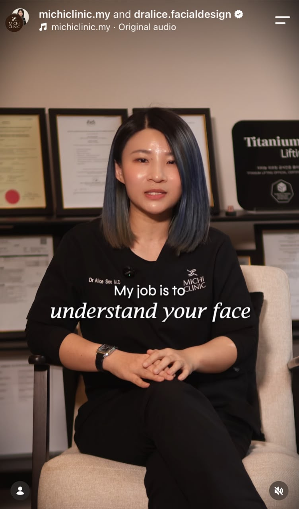
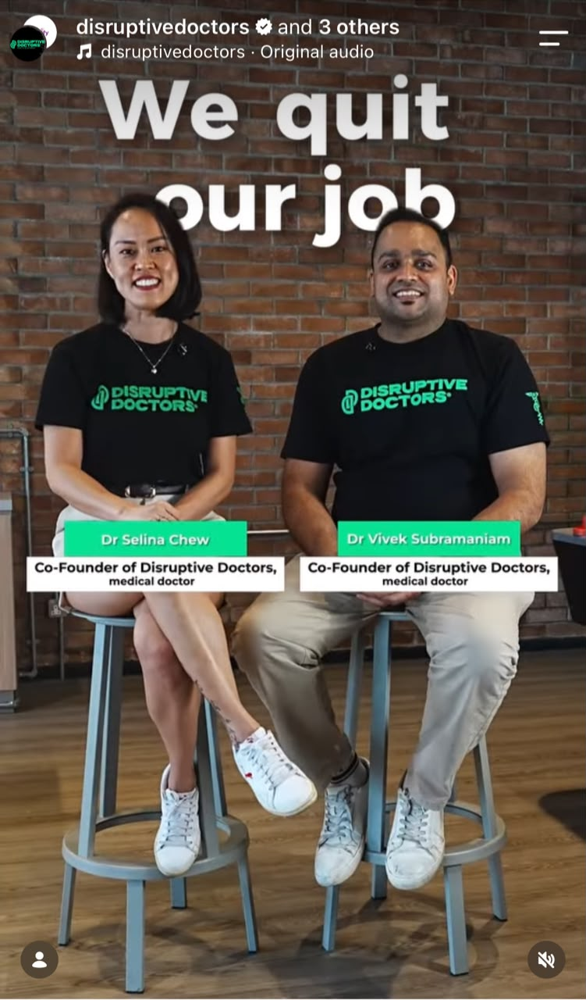
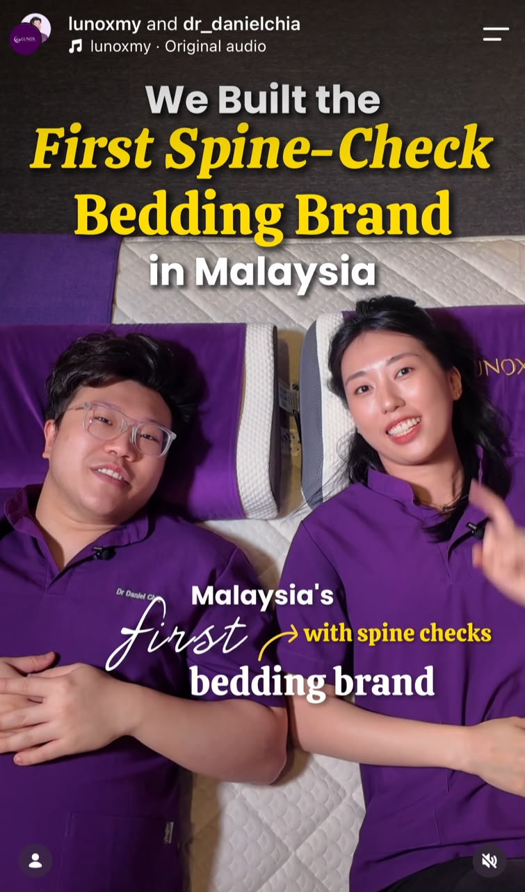
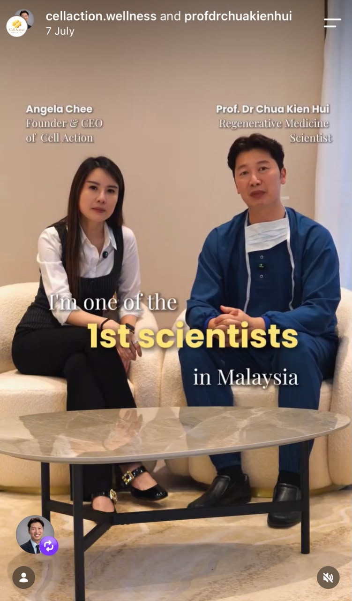
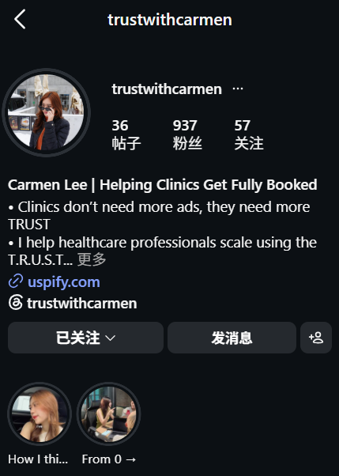
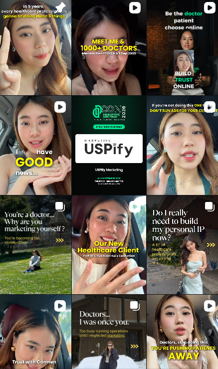

USPIFY . HEALTHCARE SOCIAL MEDIA
Get fully booked.By becoming trusted.
We help healthcare professionals become the doctor patients trust and choose through social media content.
BOOK A FREE PAGE AUDIT->



->
You spent years
becoming
a good doctor.
But how will patients know that?
HOW TRUST HAS CHANGED
Referral gets you known.
Google gets you found.
Social media gets you
remembered.


Your reputation travels through the people already around you.

You're on the shortlist. But patients are still comparing.
YOU
Doctor
Patients
Followers
Partners
Media
Brands
Opportunities
Your expertise can travel beyond your existing network, reaching more potential patients and a wider audience.
OUR IMPACT
We don't just
do social media.
 100
POSTS
≠ appointments
100
POSTS
≠ appointments
 RM1,000
AD SPEND
≠ trust
RM1,000
AD SPEND
≠ trust
And if most of your patients still disappear after:
"How much?"Then your marketing hasn't done its job.
OUR SYSTEM
We build your personal + clinic page
By using our T.R.U.S.T framework.


01
T
Talent
Show up consistently on your social media page. You are the main character. Let patients feel closer to you.
02
R
Relatable
Turn your expertise into relatable contents patients understand, remember and trust.
03
U
Uniqueness
Give patients a reason why they need to choose you. Make them want to travel or spend more just to see you.
04
S
System
Capture the right data so we know what's working and what's not. That way we can improve consistently over time.
05
T
Teach
Educate your viewers, let them know how and why you do whatever you're doing. It will shape you to become the expert in the field.
THE GOAL IS SIMPLE.
Before patients contact you... They already trust you.
Hi doctor, how much?
Any promo?
Other clinic cheaper...
Hi doctor, I've following your videos for awhile.
I want to book an appointment.
CASE STUDY 01 · LUNOX
Don't take our word for it.
Look at the growth.
Dr. Daniel
Instagram profile mock-up
WITHIN A YEAR
Use real screenshots, video thumbnails, enquiry data and appropriate claim context for the final site.
CASE STUDY 02 · CELLACTION
Content didn't just attract patients.
It opened doors.
Social visibility can create opportunities far beyond appointments.
Prof. Dr Chua
Instagram profile mock-up
PROF. DR CHUA
MALAYSIA


The visual payoff: your content can reach patients, partners, distributors, collaborators and opportunities you weren't actively searching for.
OUR REQUIREMENTS
But we're not for every doctor.
We choose our clients too.
Tick if this is you.
If that's you, we'd like to meet you.
READY?